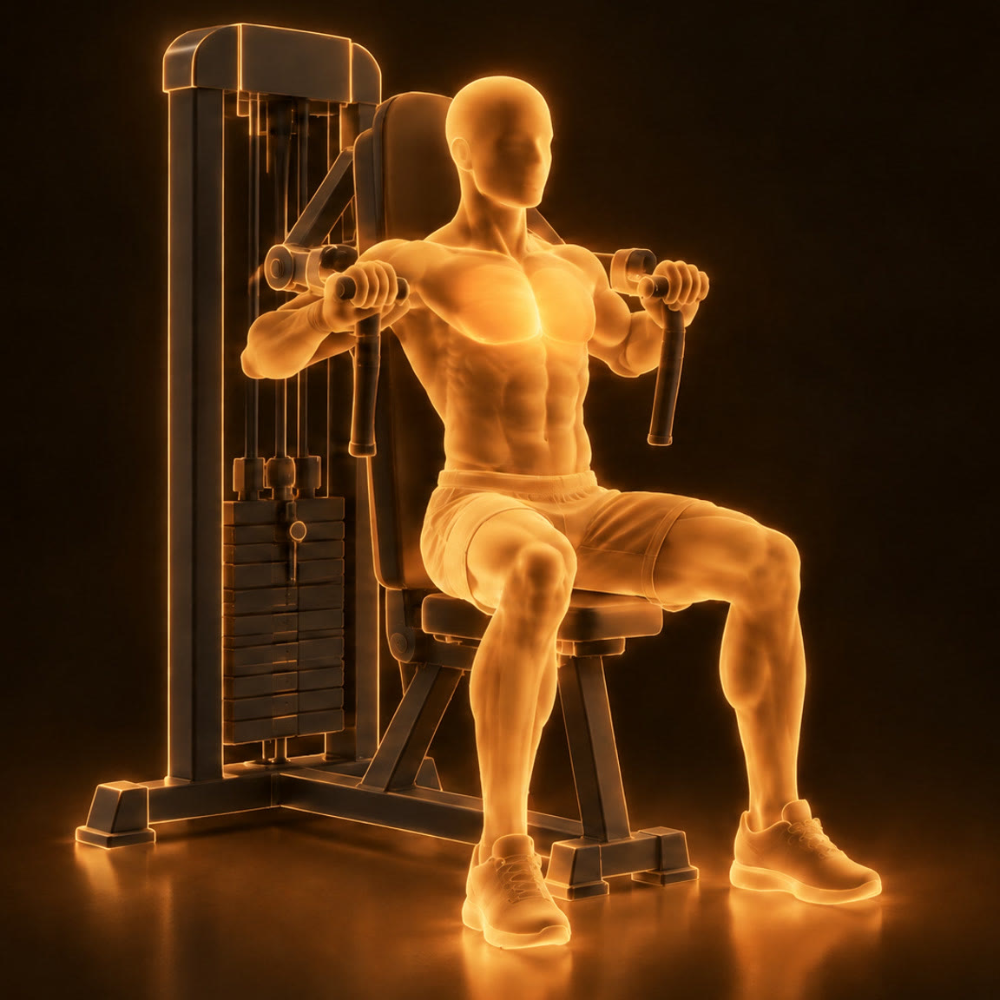
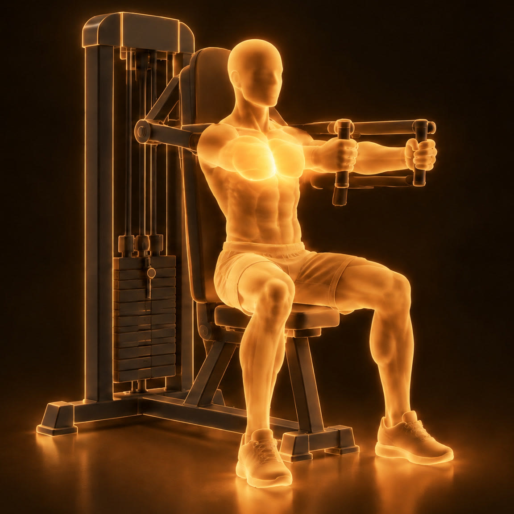
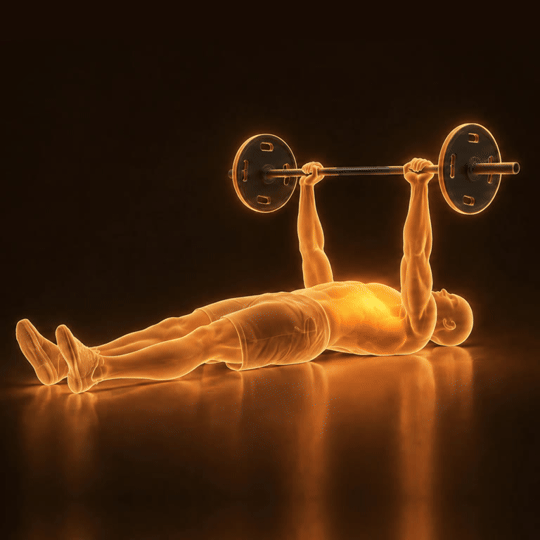
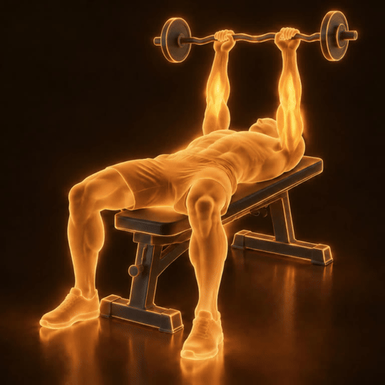
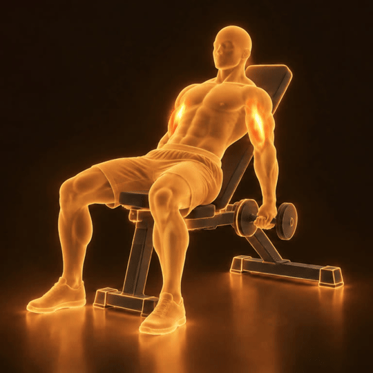
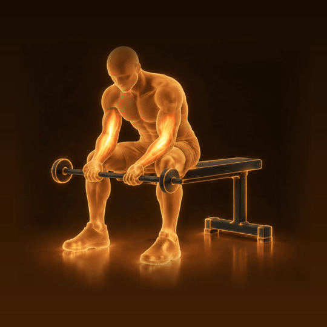
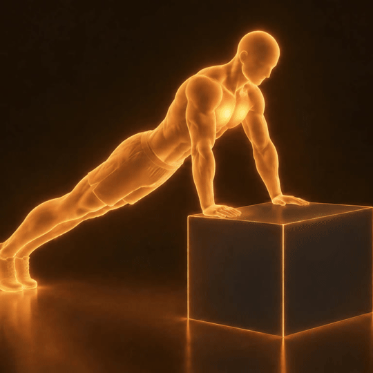
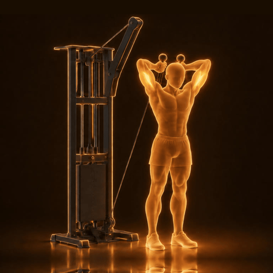
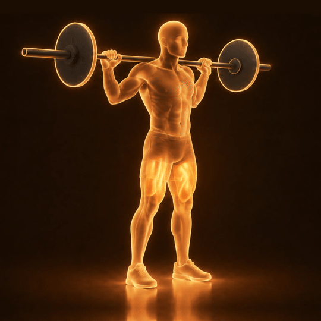

הקודמת הייתה לחיצת מוט על ספסל ליד מתקן שלא מחזיק את המוט - אבל התרגיל בספרייה הוא לחיצת חזה במכונה בישיבה. נבנה מחדש: גב צמוד למשענת, ידיות בגובה אמצע החזה, דחיפה קדימה.


הדמות של 3.11, הזוהר החזק יותר, והציוד בגרפיט כהה. הפריימים נשמרים כדי להפוך אותם בהמשך לתנועה.






